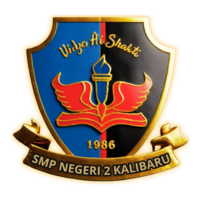

<!doctype html>
<html lang="id">
<head>
  <meta charset="UTF-8" />
  <meta name="viewport" content="width=device-width, initial-scale=1.0" />
  <meta name="theme-color" content="#f7f7f3" />
  <meta name="description" content="Latihan CBT Olimpiade Bahasa SMP/MTs: ejaan, tata kalimat, tanda baca, dan kata baku." />
  <title>Simulasi CBT Olimpiade Bahasa | Bulan Bahasa 2026</title>
  <link rel="preconnect" href="https://fonts.googleapis.com">
  <link rel="preconnect" href="https://fonts.gstatic.com" crossorigin>
  <link href="https://fonts.googleapis.com/css2?family=DM+Sans:wght@400;500;600;700&family=Manrope:wght@400;500;600;700;800&display=swap" rel="stylesheet">


<style>
:root{font-family:'DM Sans',sans-serif;color:#17221f;background:#f7f7f3;font-synthesis:none;--ink:#17221f;--muted:#71807a;--line:#e5e9e4;--green:#13795b;--mint:#e5f3ed;--orange:#f0a646;--paper:#fff;--soft:#f2f5f1}*{box-sizing:border-box}body{margin:0;min-width:320px}button{font:inherit;cursor:pointer}.shell{max-width:1180px;margin:auto;padding:25px 32px 48px}.topbar{display:flex;align-items:center;justify-content:space-between;margin-bottom:40px}.brand{display:flex;align-items:center;gap:11px;font:800 17px Manrope}.brand-mark{height:38px;width:38px;border-radius:12px;background:#166b51;color:white;display:grid;place-items:center;font-size:18px}.tag{font-size:11px;letter-spacing:.1em;text-transform:uppercase;color:var(--green);font-weight:700}.hero{display:grid;grid-template-columns:1fr auto;align-items:end;gap:20px;margin-bottom:30px}.hero h1{font:800 clamp(29px,4vw,44px)/1.12 Manrope;letter-spacing:-1.8px;margin:9px 0 10px}.hero p{color:var(--muted);margin:0;max-width:620px;line-height:1.65}.hero-badge{border:1px solid var(--line);background:white;padding:12px 16px;border-radius:14px;color:#52615b;font-size:13px}.layout{display:grid;grid-template-columns:minmax(0,1fr) 280px;gap:18px;align-items:start}.card{background:var(--paper);border:1px solid var(--line);border-radius:20px;box-shadow:0 6px 24px #17221f08}.exam{padding:24px 26px;min-height:500px}.exam-head{display:flex;justify-content:space-between;align-items:center;padding-bottom:18px;border-bottom:1px solid var(--line)}.progress-label{font-size:13px;color:var(--muted)}.progress-label b{color:var(--ink)}.timer{font:700 16px Manrope;background:#fff6e8;color:#8f5710;padding:9px 12px;border-radius:10px}.timer.urgent{background:#fff0ed;color:#bd412b}.progress{height:5px;background:#eef1ee;border-radius:9px;margin:18px 0 26px;overflow:hidden}.progress span{height:100%;display:block;background:var(--green);border-radius:9px;transition:width .2s}.q-meta{display:flex;gap:8px;align-items:center;margin-bottom:16px}.pill{font-size:11px;font-weight:700;color:#286d55;background:var(--mint);padding:6px 9px;border-radius:20px}.pill.level{color:#845c20;background:#fff4df}.question{font:700 20px/1.5 Manrope;letter-spacing:-.3px;margin:0 0 16px}.context{background:#f8faf8;border-left:3px solid #74aa90;padding:13px 15px;border-radius:0 10px 10px 0;color:#43534d;line-height:1.65;margin:14px 0}.visual{margin:17px 0 19px;border-radius:14px;overflow:hidden;border:1px solid #e5e9e4}.visual svg{width:100%;display:block;height:auto}.options{display:grid;gap:10px}.option{display:flex;align-items:flex-start;text-align:left;gap:12px;width:100%;border:1px solid var(--line);border-radius:12px;background:white;padding:12px 14px;color:#30413a;line-height:1.5;transition:.15s}.option:hover{border-color:#9dbdac;background:#fbfdfb}.option.selected{border-color:#2b8c68;background:#f1f8f4;box-shadow:0 0 0 1px #2b8c68}.letter{flex:0 0 25px;width:25px;height:25px;border-radius:8px;display:grid;place-items:center;background:#f1f3f1;font-weight:700;font-size:12px;color:#607069}.selected .letter{background:#d7eee2;color:#17684d}.nav-row{display:flex;justify-content:space-between;align-items:center;margin-top:25px}.btn{border:0;padding:11px 16px;border-radius:10px;font-weight:700;font-size:13px}.btn.secondary{background:#f1f4f1;color:#34443d}.btn.primary{background:#176b50;color:white}.btn.primary:hover{background:#0e5841}.btn:disabled{opacity:.42;cursor:not-allowed}.side{padding:20px;position:sticky;top:18px}.side-title{font:700 15px Manrope;margin:0 0 5px}.side-sub{font-size:12px;color:var(--muted);margin:0 0 17px}.grid{display:grid;grid-template-columns:repeat(5,1fr);gap:8px}.num{aspect-ratio:1;border:1px solid var(--line);background:#fff;border-radius:9px;font-size:12px;color:#64736c}.num.current{background:#176b50;color:white;border-color:#176b50}.num.done{background:#e7f3ed;color:#176b50;border-color:#cce4d7}.legend{display:flex;flex-wrap:wrap;gap:12px;margin:14px 0 19px;font-size:10px;color:var(--muted)}.dot{display:inline-block;width:8px;height:8px;border-radius:3px;margin-right:5px;background:#e7f3ed}.dot.current{background:#176b50}.submit{width:100%;margin-top:7px}.note{font-size:11px;line-height:1.5;color:var(--muted);margin:13px 0 0}.welcome,.results{max-width:760px;margin:6vh auto;padding:36px} .school-identity{display:flex;align-items:center;gap:14px;margin:0 0 24px;padding:12px 15px;background:#f8faf6;border:1px solid #e9eee8;border-radius:16px;width:max-content;max-width:100%}.school-logo-wrap{width:76px;height:76px;flex:0 0 76px;display:grid;place-items:center;background:#fff;border:1px solid #eef0eb;border-radius:16px}.school-logo{display:block;width:68px;height:68px;object-fit:contain}.school-caption{display:grid;gap:5px}.school-caption strong{font:800 12px Manrope;letter-spacing:.045em;color:#263b32}.school-caption span{font-size:12px;color:var(--muted)}.welcome h1,.results h1{font:800 36px/1.15 Manrope;letter-spacing:-1.4px;margin:11px 0}.welcome p,.results p{color:var(--muted);line-height:1.7}.welcome-grid{display:grid;grid-template-columns:repeat(3,1fr);gap:10px;margin:24px 0}.level-picker{display:grid;grid-template-columns:repeat(2,minmax(0,1fr));gap:12px;margin:20px 0 24px}.level-card{display:grid;gap:6px;text-align:left;padding:16px;border:1px solid var(--line);border-radius:14px;background:#fff;color:var(--ink);min-width:0;transition:border-color .15s,box-shadow .15s,background .15s}.level-card:hover{border-color:#9dbdac}.level-card.active{border-color:#176b50;background:#f1f8f4;box-shadow:0 0 0 1px #176b50}.level-name{font-size:10px;letter-spacing:.12em;font-weight:800;color:var(--green)}.level-card strong{font:700 14px Manrope}.level-card small{font-size:11px;color:var(--muted);line-height:1.5}.actions{flex-wrap:wrap}.feature{background:#f5f7f4;border-radius:12px;padding:14px}.feature strong{display:block;font:700 13px Manrope;margin-bottom:6px}.feature span{font-size:12px;color:var(--muted);line-height:1.5}.field{display:flex;gap:10px;margin-top:22px}.field input{flex:1;border:1px solid var(--line);border-radius:10px;padding:12px 14px;font:inherit;min-width:0}.results{max-width:900px}.scorebox{display:grid;grid-template-columns:160px 1fr;gap:20px;align-items:center;background:#edf6f0;border-radius:18px;padding:22px;margin:22px 0}.score{font:800 45px Manrope;color:#176b50}.score small{display:block;font:500 12px 'DM Sans';color:var(--muted);margin-top:4px}.breakdown{display:grid;grid-template-columns:repeat(2,1fr);gap:10px}.cat{background:#f7f8f6;border-radius:12px;padding:13px}.cat-top{display:flex;justify-content:space-between;font-size:12px;font-weight:700}.bar{height:6px;background:#e5eae5;border-radius:9px;margin-top:9px;overflow:hidden}.bar span{display:block;height:100%;background:#2d8a67}.review{margin-top:26px}.review h2{font:700 19px Manrope}.review-item{padding:16px 0;border-bottom:1px solid var(--line)}.review-item h3{font:600 14px/1.5 Manrope;margin:0 0 9px}.correct{color:#18754f;font-weight:700}.wrong{color:#bd4a36;font-weight:700}.explanation{font-size:13px;line-height:1.65;color:#596962;margin:8px 0}.actions{display:flex;gap:10px;margin-top:24px}.hidden{display:none!important}.footer{text-align:center;font-size:11px;color:#87928c;margin-top:22px}@media(max-width:800px){.shell{padding:18px 17px 36px}.topbar{margin-bottom:28px}.hero{grid-template-columns:1fr}.hero-badge{justify-self:start}.layout{grid-template-columns:1fr}.side{position:static;grid-row:1;padding:16px}.side-sub,.legend,.note{display:none}.grid{grid-template-columns:repeat(10,1fr)}.exam{padding:20px 17px}.question{font-size:18px}.welcome,.results{margin:18px auto;padding:25px 19px}.welcome h1,.results h1{font-size:30px}.scorebox{grid-template-columns:110px 1fr;padding:16px}.score{font-size:37px}}@media(max-width:500px){.level-picker{grid-template-columns:1fr}.school-identity{flex-direction:column;text-align:center;margin-left:auto;margin-right:auto;width:100%}.school-caption{justify-items:center}.grid{grid-template-columns:repeat(10,1fr);gap:5px}.num{font-size:10px;border-radius:7px}.welcome-grid{grid-template-columns:1fr}.breakdown{grid-template-columns:1fr}.scorebox{grid-template-columns:1fr}.field{flex-direction:column}.nav-row .btn{padding:10px 12px}.exam{min-height:0}}

/* Laporan analisis hasil */
.section-title{font:700 17px Manrope;margin:26px 0 5px}.section-hint{font-size:12px!important;margin:0 0 14px!important}.stats{display:grid;grid-template-columns:repeat(3,1fr);gap:10px}.stat{background:#f7f8f6;border:1px solid var(--line);border-radius:12px;padding:13px}.stat span{display:block;font-size:11px;color:var(--muted);margin-bottom:7px}.stat strong{font:700 20px Manrope;color:#1e4739}.stat small{font:500 11px 'DM Sans';color:var(--muted)}.analysis-list{display:grid;gap:10px}.analysis-row{padding:14px 15px;border:1px solid var(--line);border-radius:12px;background:#fff}.analysis-head{display:flex;align-items:center;justify-content:space-between;gap:12px}.analysis-head strong{font:700 13px Manrope}.analysis-head small{display:block;color:var(--muted);font-size:11px;margin-top:4px}.analysis-result{text-align:right;min-width:62px}.analysis-result b{display:block;font:700 16px Manrope;color:#176b50}.analysis-result span{font-size:10px;color:var(--muted)}.plan{padding-left:19px;margin:9px 0 12px;font-size:12px;line-height:1.65}.plan li+li{margin-top:5px}.disclaimer{display:block;padding-top:10px;border-top:1px solid #dfe8e1;font-size:11px;color:#697770;line-height:1.55}.review-context{font-size:12px}.review-item .q-meta{margin-bottom:9px}
@media(max-width:500px){.stats{gap:6px}.stat{padding:10px}.stat span{font-size:10px}.stat strong{font-size:17px}.analysis-row{padding:12px}.analysis-head small{max-width:210px;line-height:1.5}}

/* Tampilan simulasi ujian bergaya lembar CBT lomba */
.topbar{background:#153e31;padding:12px 16px;border-radius:15px;min-height:64px}.topbar .brand{color:#fff;gap:12px}.topbar .brand-mark{background:#dfc174;color:#173c2e;border:2px solid #f0dfa9;font:800 13px Manrope}.brand-copy{display:flex;flex-direction:column;gap:3px}.brand-copy strong{font:800 12px Manrope;letter-spacing:.09em}.brand-copy small{font:500 10px 'DM Sans';letter-spacing:.075em;color:#d0e0d7}.topbar .tag{color:#e8d596;text-align:right}.timer-wrap{display:flex;flex-direction:column;align-items:flex-end;gap:4px}.timer-wrap>span{font-size:9px;letter-spacing:.1em;font-weight:700;color:#8a7a5d}.exam-head{align-items:center}.progress-label{font-weight:700;letter-spacing:.04em}.hero-badge{border-left:3px solid #c6a75b}.side-title{display:flex;align-items:center;gap:8px}.side-title::before{content:'▦';color:#b18b39;font-size:17px}.side .submit{letter-spacing:.02em}.welcome .tag:first-child{display:inline-block}.welcome .field input{min-height:46px}.footer{max-width:760px;margin-left:auto;margin-right:auto;line-height:1.6}@media(max-width:800px){.topbar{margin-bottom:25px}.topbar .tag{max-width:130px;line-height:1.45}.timer-wrap>span{font-size:8px}.side{border-top:3px solid #d7c17e}.hero-badge{padding:10px 13px}}@media(max-width:500px){.topbar{padding:10px 12px;min-height:58px}.brand-copy strong{font-size:10px}.brand-copy small{font-size:8px}.topbar .tag{font-size:9px;max-width:102px}.timer-wrap>span{display:none}.timer{font-size:14px;padding:7px 9px}.exam-head{padding-bottom:13px}.side{padding:12px}.side-title{font-size:13px}.grid{gap:5px}.num{min-width:0}.hero{margin-bottom:18px}.hero h1{font-size:29px}}
.event-note{display:grid;gap:5px;background:#f7f2e2;border:1px solid #eee2bd;border-left:3px solid #c2a45a;border-radius:11px;padding:12px 14px;margin:18px 0;color:#536054}.event-note strong{font:700 12px Manrope;color:#66522b}.event-note span{font-size:12px;line-height:1.6}
.ai-notice{position:relative;aspect-ratio:3/2;overflow:hidden;border-radius:14px;background:#e4e3cd}.ai-notice>img{position:absolute;inset:0;width:100%;height:100%;object-fit:cover}.notice-copy{position:absolute;left:19%;right:20%;top:15%;height:62%;display:flex;flex-direction:column;justify-content:center;align-items:center;text-align:center;padding:8px;color:#1c4034}.notice-copy>span{font-size:clamp(6px,1.25vw,10px);letter-spacing:.14em;font-weight:700;color:#80652c}.notice-copy>strong{font:800 clamp(12px,2.65vw,25px)/1.2 Manrope;margin:6px 0;letter-spacing:-.025em}.notice-copy>p{font-size:clamp(9px,1.8vw,16px);margin:4px 0 0;color:#53645c}.visual:has(.ai-notice){border:0;background:transparent}

</style>
</head>
<body><div id="app"></div>

<script>const categories=['Ejaan','Tata kalimat','Tanda baca','Kata baku/tidak baku'];
const levelOneQuestions=[
{c:0,level:'Analisis',stem:'Panitia meminta peserta memperbaiki paragraf pengumuman berikut. Manakah penyuntingan yang seluruhnya tepat?',context:'Pada hari sabtu, 17 oktober 2026, peserta akan mengikuti Olimpiade Bahasa di kecamatan Genteng. Setiap peserta diminta membawa kartu pelajar, alat tulis dan, telepon genggam.',opts:['Pada hari Sabtu, 17 Oktober 2026, peserta akan mengikuti Olimpiade Bahasa di Kecamatan Genteng. Setiap peserta diminta membawa kartu pelajar, alat tulis, dan telepon genggam.','Pada Hari Sabtu, 17 Oktober 2026, peserta akan mengikuti Olimpiade Bahasa di Kecamatan Genteng. Setiap peserta diminta membawa kartu pelajar alat tulis, dan telepon genggam.','Pada hari Sabtu, 17 oktober 2026, peserta akan mengikuti Olimpiade bahasa di kecamatan Genteng. Setiap peserta diminta membawa kartu pelajar, alat tulis dan telepon genggam.','Pada hari Sabtu, 17 Oktober 2026, peserta akan mengikuti olimpiade Bahasa di Kecamatan genteng. Setiap peserta diminta membawa kartu pelajar, alat tulis, dan telepon genggam.'],a:0,exp:'Nama hari dan bulan ditulis dengan huruf kapital. Nama kegiatan dan nama wilayah yang menjadi nama diri juga dikapitalisasi. Unsur perincian dipisahkan dengan koma, termasuk sebelum dan.'},
{c:0,level:'Evaluasi',stem:'Sebuah laporan menyebut bahwa bahasa Indonesia digunakan oleh “suku Jawa, suku Sunda, dan suku Bugis”. Penyunting ingin membetulkan kapitalisasi tanpa mengubah makna. Pilihan mana yang tepat?',opts:['Bahasa Indonesia digunakan oleh Suku Jawa, Suku Sunda, dan Suku Bugis.','Bahasa Indonesia digunakan oleh suku Jawa, suku Sunda, dan suku Bugis.','Bahasa Indonesia digunakan oleh suku jawa, suku sunda, dan suku bugis.','Bahasa indonesia digunakan oleh suku Jawa, suku Sunda, dan suku Bugis.'],a:1,exp:'Nama suku ditulis dengan huruf kapital pada unsur nama dirinya: suku Jawa, suku Sunda, suku Bugis. Kata jenis suku tetap huruf kecil. Pada nama bahasa, kata Indonesia diawali huruf kapital; kata bahasa tetap kecil kecuali jika berada di awal kalimat seperti pada pilihan.'},
{c:0,level:'Analisis',stem:'Cermati penulisan bagian buku berikut. Penyuntingan ejaan yang tepat adalah …',context:'“Baca kembali bab ii halaman 12-15 sebelum presentasi.”',opts:['Baca kembali Bab II, halaman 12–15, sebelum presentasi.','Baca kembali bab II, halaman 12–15, sebelum presentasi.','Baca kembali Bab II, halaman 12-15 sebelum presentasi.','Baca kembali Bab II halaman 12–15 sebelum presentasi.'],a:0,exp:'Nama bagian buku yang diikuti angka Romawi diawali huruf kapital. Koma memisahkan keterangan Bab II dan halaman 12–15. Tanda pisah (–) menunjukkan rentang halaman.'},
{c:0,level:'Evaluasi',stem:'Pada poster lomba tertulis kalimat seperti pada ilustrasi. Revisi manakah yang tepat untuk konteks pengumuman resmi?',visual:`<div class="ai-notice"><div class="notice-copy"><span>PENGUMUMAN LOMBA</span><strong>Ayo Ikut Olimpiade bahasa!</strong><p>bawa kartu pelajar dan alat tulis</p></div></div>`,opts:['Ayo ikut Olimpiade Bahasa! Bawa kartu pelajar dan alat tulis.','Ayo Ikut Olimpiade Bahasa! Bawa Kartu Pelajar dan Alat Tulis.','Ayo ikut olimpiade bahasa! bawa kartu pelajar dan alat tulis.','Ayo ikut Olimpiade bahasa, bawa kartu pelajar dan alat tulis!'],a:0,exp:'Awal kalimat menggunakan kapital. Nama kegiatan yang diperlakukan sebagai nama diri ditulis Olimpiade Bahasa. Kalimat perintah kedua diawali kapital dan diakhiri titik.'},
{c:0,level:'Penerapan',stem:'Manakah penulisan gabungan kata dan imbuhan yang sesuai kaidah?',opts:['antar-kelas, nonaktif, kerja sama','antarkelas, non-aktif, kerjasama','antarkelas, nonaktif, kerja sama','antar kelas, non aktif, kerjasama'],a:2,exp:'Bentuk terikat antar- dan non- umumnya dirangkai dengan kata yang mengikutinya: antarkelas, nonaktif. Kerja sama ditulis terpisah.'},
{c:1,level:'Evaluasi',stem:'Editor menemukan empat kalimat dalam artikel peserta. Kalimat manakah yang paling efektif dan memiliki hubungan logis?',opts:['Karena jadwal berubah, sehingga peserta diminta memeriksa pengumuman terbaru.','Jadwal berubah, oleh karena itu peserta diminta memeriksa pengumuman terbaru.','Karena jadwal berubah, peserta diminta memeriksa pengumuman terbaru.','Jadwal berubah disebabkan karena panitia memperbarui pengumuman terbaru.'],a:2,exp:'Konjungsi karena sudah menandai anak kalimat sebab, sehingga tidak perlu dipasangkan dengan sehingga. Pilihan C membentuk hubungan sebab-akibat yang efektif.'},
{c:1,level:'Analisis',stem:'Kalimat mana yang menempatkan keterangan secara paling jelas sehingga tidak menimbulkan makna bahwa “dengan cermat” menerangkan panitia?',context:'Maksud: peserta harus memeriksa jawaban dengan cermat sebelum mengirimkannya.',opts:['Panitia mengingatkan peserta dengan cermat memeriksa jawaban sebelum dikirim.','Dengan cermat, panitia mengingatkan peserta untuk memeriksa jawaban sebelum mengirimkannya.','Panitia mengingatkan peserta agar memeriksa jawaban dengan cermat sebelum mengirimkannya.','Panitia mengingatkan dengan cermat peserta memeriksa jawaban sebelum mengirimkannya.'],a:2,exp:'Frasa dengan cermat diletakkan dekat verba memeriksa sehingga jelas menerangkan tindakan peserta, bukan cara panitia mengingatkan.'},
{c:1,level:'Analisis',stem:'Pilih kalimat yang memiliki kesejajaran bentuk dalam perincian kegiatan.',opts:['Peserta diminta membaca teks, analisis argumen, dan menyimpulkan gagasan.','Peserta diminta membaca teks, menganalisis argumen, dan menyimpulkan gagasan.','Peserta diminta membaca teks, menganalisis argumen, dan kesimpulan gagasan.','Peserta diminta pembacaan teks, analisis argumen, dan menyimpulkan gagasan.'],a:1,exp:'Ketiga unsur harus sejajar sebagai verba aktif: membaca, menganalisis, menyimpulkan.'},
{c:1,level:'Evaluasi',stem:'Perhatikan kalimat: “Kepada seluruh peserta diwajibkan mengisi daftar hadir.” Revisi yang paling efektif adalah …',opts:['Kepada seluruh peserta diwajibkan untuk mengisi daftar hadir.','Seluruh peserta diwajibkan mengisi daftar hadir.','Daftar hadir diwajibkan kepada seluruh peserta untuk diisi.','Untuk seluruh peserta diwajibkan mengisi daftar hadir.'],a:1,exp:'Kata kepada menyebabkan kalimat tidak memiliki subjek yang tepat. Menghapusnya menghasilkan subjek Seluruh peserta dan predikat diwajibkan.'},
{c:1,level:'Penerapan',stem:'Pilih gabungan kalimat yang menyatakan pertentangan secara logis dan efektif.',opts:['Meskipun naskahnya sudah direvisi, tetapi beberapa kesalahan masih ditemukan.','Naskahnya sudah direvisi, namun tetapi beberapa kesalahan masih ditemukan.','Meskipun naskahnya sudah direvisi, beberapa kesalahan masih ditemukan.','Naskahnya sudah direvisi meskipun, beberapa kesalahan masih ditemukan.'],a:2,exp:'Meskipun sudah menyatakan pertentangan, jadi tidak perlu ditambah tetapi. Pilihan C juga menempatkan anak kalimat secara wajar.'},
{c:2,level:'Evaluasi',stem:'Penyunting ingin mempertahankan kutipan langsung sekaligus memperbaiki tanda baca. Bentuk yang benar adalah …',context:'Pembina berkata bahwa peserta harus memeriksa kembali jawaban mereka.',opts:['Pembina berkata, “Periksa kembali jawaban kalian.”','Pembina berkata “Periksa kembali jawaban kalian”.','Pembina berkata “Periksa kembali jawaban kalian.”','Pembina berkata, “periksa kembali jawaban kalian”.'],a:0,exp:'Petikan langsung didahului koma setelah pengiring. Huruf pertama petikan berupa kapital dan tanda titik diletakkan sebelum tanda petik penutup.'},
{c:2,level:'Analisis',stem:'Kalimat berikut berisi perincian. Perbaikan tanda baca yang tepat adalah …',context:'“Saya membawa kamus, buku catatan dan pensil Rani,” kata Dita. Rani adalah nama pemilik pensil.',opts:['“Saya membawa kamus, buku catatan, dan pensil, Rani,” kata Dita.','“Saya membawa kamus buku catatan, dan pensil, Rani,” kata Dita.','“Saya membawa kamus, buku catatan dan pensil, Rani,” kata Dita.','“Saya membawa kamus, buku catatan, dan pensil Rani,” kata Dita.'],a:3,exp:'Koma memisahkan unsur perincian kamus, buku catatan, dan pensil. Karena Rani menerangkan pemilik pensil, tidak ada koma sebelum Rani. Opsi A/B memisahkan nama pemilik secara keliru.'},
{c:2,level:'Analisis',stem:'Tanda baca yang tepat untuk memisahkan nama hari dan tanggal pada kalimat laporan adalah …',context:'Babak final akan dilaksanakan pada Senin 5 Oktober 2026.',opts:['Babak final akan dilaksanakan pada Senin, 5 Oktober 2026.','Babak final akan dilaksanakan pada Senin: 5 Oktober 2026.','Babak final akan dilaksanakan pada Senin; 5 Oktober 2026.','Babak final akan dilaksanakan pada Senin. 5 Oktober 2026.'],a:0,exp:'Koma digunakan di antara nama hari dan tanggal yang ditulis berurutan: Senin, 5 Oktober 2026.'},
{c:2,level:'Penerapan',stem:'Titik dua tepat digunakan pada kalimat yang mana?',opts:['Panitia mengumumkan: bahwa final dimulai pukul 10.00.','Peserta perlu memeriksa tiga hal: ejaan, susunan kalimat, dan tanda baca.','Peserta: diminta memasuki ruangan dengan tertib.','Peserta membawa: kartu pelajar dan alat tulis.'],a:1,exp:'Titik dua dapat mengawali perincian setelah pernyataan lengkap. Pada pilihan B, “Peserta perlu memeriksa tiga hal” sudah lengkap dan diikuti perincian. Pilihan A dan C menempatkan titik dua di tengah struktur kalimat, sedangkan pada D perincian merupakan pelengkap langsung verba membawa.'},
{c:2,level:'Evaluasi',stem:'Kalimat mana yang tanda bacanya tepat dan tidak mengubah maksud?',opts:['Ia bertanya, “Apakah semua peserta sudah hadir?”','Ia bertanya “Apakah semua peserta sudah hadir”?','Ia bertanya: “apakah semua peserta sudah hadir?”','Ia bertanya, “Apakah semua peserta sudah hadir”.'],a:0,exp:'Kalimat tanya dalam petikan langsung memakai tanda tanya sebelum tanda petik penutup. Setelah verba pengiring bertanya, petikan langsung didahului koma.'},
{c:3,level:'Analisis',stem:'Dalam penyuntingan, bentuk tidak baku “resiko” muncul berulang kali. Perbaikan yang tepat dalam kalimat “Panitia menanggung … kegiatan” ialah …',opts:['resiko','risiko','resikho','resikoo'],a:1,exp:'Bentuk baku menurut KBBI adalah risiko.'},
{c:3,level:'Evaluasi',stem:'Manakah kalimat yang seluruh pilihan katanya baku?',opts:['Atlet itu merubah jadwal latihan karena aktifitas sekolah.','Atlet itu mengubah jadwal latihan karena aktivitas sekolah.','Atlit itu mengubah jadwal latihan karena aktivitas sekolah.','Atlet itu merubah jadwal latihan karena aktivitas sekolah.'],a:1,exp:'Bentuk baku: atlet, mengubah, dan aktivitas. Merubah dan aktifitas merupakan bentuk tidak baku.'},
{c:3,level:'Analisis',stem:'Seorang siswa menulis: “Jadual final diumumkan setelah analisa selesai.” Perbaikan yang seluruhnya baku adalah …',opts:['Jadwal final diumumkan setelah analisis selesai.','Jadual final diumumkan setelah analisis selesai.','Jadwal final diumumkan setelah analisa selesai.','Jadual final diumumkan setelah analisa selesai.'],a:0,exp:'Bentuk baku yang tepat ialah jadwal dan analisis.'},
{c:3,level:'Penerapan',stem:'Lengkapi kalimat berikut dengan pasangan bentuk baku yang tepat: “Peserta memperoleh … untuk … data hasil pengamatan.”',opts:['ijin; menganalisa','izin; menganalisis','ijin; menganalisis','izin; menganalisa'],a:1,exp:'Bentuk baku ialah izin dan menganalisis.'},
{c:3,level:'Evaluasi',stem:'Manakah penyuntingan yang paling tepat untuk kalimat “Nasehat pembina membuat peserta lebih trampil menyusun kalimat”?',opts:['Nasihat pembina membuat peserta lebih terampil menyusun kalimat.','Nasehat pembina membuat peserta lebih terampil menyusun kalimat.','Nasihat pembina membuat peserta lebih trampil menyusun kalimat.','Nasehat pembina membuat peserta lebih trampil menyusun kalimat.'],a:0,exp:'Bentuk baku yang digunakan ialah nasihat dan terampil.'}
,{c:0,level:'Penerapan',stem:'Pilih kalimat yang penulisan kata depan dan imbuhannya tepat.',opts:['Naskah itu di periksa sebelum dikirim ke panitia.','Naskah itu diperiksa sebelum dikirim kepanitia.','Naskah itu diperiksa sebelum dikirim ke panitia.','Naskah itu di periksa sebelum dikirim kepanitia.'],a:2,exp:'di- sebagai imbuhan pembentuk verba pasif ditulis serangkai dengan kata kerja: diperiksa. Kata depan ke yang menunjukkan tujuan ditulis terpisah: ke panitia.'}
,{c:0,level:'Analisis',stem:'Manakah penulisan partikel pun yang tepat dalam kalimat berikut?',opts:['Apapun hasil seleksi, peserta tetap menerima umpan balik.','Apa pun hasil seleksi, peserta tetap menerima umpan balik.','Apa-pun hasil seleksi, peserta tetap menerima umpan balik.','Apa pun hasil seleksi peserta tetap menerima umpan balik.'],a:1,exp:'Partikel pun ditulis terpisah dari kata yang mendahuluinya, kecuali pada bentuk gabungan yang sudah padu seperti walaupun dan meskipun. Koma memisahkan anak kalimat yang mendahului induk kalimat.'}
,{c:1,level:'Analisis',stem:'Kalimat manakah yang tepat menggunakan pasangan konjungsi korelatif dan bentuk sejajar?',opts:['Tidak hanya memahami kaidah, tetapi peserta juga menerapkannya.','Peserta tidak hanya memahami kaidah, tetapi juga menerapkannya.','Peserta tidak hanya pemahaman kaidah, tetapi juga menerapkannya.','Peserta bukan hanya memahami kaidah, melainkan juga penerapan kaidah.'],a:1,exp:'Pasangan tidak hanya … tetapi juga menghubungkan unsur yang sejajar. Pada pilihan B, kedua unsur berupa verba: memahami dan menerapkan.'}
,{c:1,level:'Evaluasi',stem:'Kalimat mana yang paling efektif untuk menyampaikan bahwa juri memeriksa jawaban sebelum hasil diumumkan?',opts:['Sebelum hasil diumumkan, juri memeriksa semua jawaban peserta.','Sebelum hasil diumumkan juri memeriksa semua jawaban peserta.','Juri memeriksa semua jawaban peserta sebelum daripada hasil diumumkan.','Juri sebelum hasil diumumkan memeriksa semua jawaban dari peserta semuanya.'],a:0,exp:'Anak kalimat yang mendahului induk kalimat dipisahkan dengan koma. Pilihan A juga menghindari kata mubazir dan susunan yang mengganggu kejelasan.'}
,{c:2,level:'Penerapan',stem:'Pilih penggunaan koma yang tepat untuk memisahkan anak kalimat yang terletak di awal.',opts:['Jika waktu tersisa lima menit peserta harus segera meninjau jawaban.','Jika waktu tersisa lima menit, peserta harus segera meninjau jawaban.','Jika, waktu tersisa lima menit peserta harus segera meninjau jawaban.','Jika waktu tersisa, lima menit peserta harus segera meninjau jawaban.'],a:1,exp:'Anak kalimat syarat yang mendahului induk kalimat dipisahkan dengan koma: “Jika waktu tersisa lima menit, …”. Tidak ada koma di antara jika dan anak kalimatnya.'}
,{c:2,level:'Analisis',stem:'Kalimat majemuk setara berikut tidak memakai konjungsi. Tanda baca yang tepat untuk memisahkan kedua klausa ialah …',context:'Waktu pengerjaan hampir habis … peserta segera mengirim jawaban.',opts:[',','; ',':','—'],a:1,exp:'Tanda titik koma dapat memisahkan dua klausa setara yang berhubungan erat tanpa konjungsi. Koma saja tidak cukup untuk memisahkan dua klausa mandiri pada konteks ini.'}
,{c:2,level:'Evaluasi',stem:'Manakah penulisan petikan langsung yang tepat?',opts:['Ketua juri berkata “Babak final dimulai sekarang.”','Ketua juri berkata, “Babak final dimulai sekarang.”','Ketua juri berkata, “babak final dimulai sekarang”.','Ketua juri berkata, “Babak final dimulai sekarang”.'],a:1,exp:'Petikan langsung yang mengikuti kata pengiring didahului koma. Huruf pertama petikan berupa kapital. Tanda titik diletakkan sebelum tanda petik penutup.'}
,{c:3,level:'Analisis',stem:'Pilih bentuk baku untuk melengkapi kalimat: “Peserta diminta … sumber kutipan sebelum mengirim tulisan.”',opts:['mengkroscek','mengecek ulang','meng-check','cek ulangi'],a:1,exp:'Mengecek ulang merupakan bentuk bahasa Indonesia yang baku dan efektif pada konteks ini. Bentuk campuran mengkroscek dan meng-check tidak sesuai.'}
,{c:3,level:'Evaluasi',stem:'Manakah kalimat yang memakai bentuk baku?',opts:['Juri memberi sanksi kepada peserta yang melanggar ketentuan.','Juri memberi sangsi kepada peserta yang melanggar ketentuan.','Juri memberi sangsi pada peserta yang melanggar ketentuan.','Juri memberikan sangsi bagi peserta yang melanggar ketentuan.'],a:0,exp:'Kata baku yang berarti tindakan hukuman ialah sanksi. Sangsi bermakna ragu-ragu.'}
,{c:3,level:'Analisis',stem:'Sunting kalimat berikut agar semua kata baku: “Atlit diminta mempraktekkan tehnik membaca berita.”',opts:['Atlet diminta mempraktikkan teknik membaca berita.','Atlit diminta mempraktikkan teknik membaca berita.','Atlet diminta mempraktekkan teknik membaca berita.','Atlet diminta mempraktikkan tehnik membaca berita.'],a:0,exp:'Bentuk baku yang benar ialah atlet, mempraktikkan, dan teknik.'}
];
const levelTwoQuestions=[
{c:0,level:'Analisis mendalam',stem:'Tim penyunting diminta mempertahankan fakta laporan, tetapi membetulkan ejaan pada kalimat yang dikutip. Pilih revisi yang tepat.',context:"Tim literasi sekolah memeriksa salinan laporan kunjungan sebelum dimuat ke buletin. Laporan itu mencatat jadwal, lokasi, dan dua pekerjaan relawan. Nama tempat pada catatan merupakan nama resmi yang ditetapkan desa.",opts:['Pada hari Selasa, 3 Maret, relawan membaca cerita di Balai Desa Karangrejo. Setelah itu, mereka mendata buku yang rusak.','Pada Hari Selasa, 3 Maret, relawan membaca cerita di Balai Desa Karangrejo. Setelah itu, mereka mendata buku yang rusak.','Pada hari Selasa, 3 Maret, relawan membaca cerita di balai desa Karangrejo. Setelah itu, mereka mendata buku yang rusak.','Pada hari Selasa, 3 Maret, relawan membaca cerita di Balai Desa karangrejo. Setelah itu, mereka mendata buku yang rusak.'],a:0,exp:'Nama hari dan bulan memakai huruf kapital. Nama resmi tempat memakai kapital pada setiap unsur nama diri: Balai Desa Karangrejo. Kata pertama kalimat baru, Setelah, juga berkapital. Kata hari dan kata umum desa tidak otomatis memakai kapital.'},
{c:0,level:'Evaluasi penyuntingan',stem:'Kartu katalog memuat judul buku yang tercetak sebagai Jejak Kata. Pilih kapitalisasi judul yang tepat.',context:"Rani menyusun katalog bacaan untuk pojok literasi. Ia menyalin judul persis seperti yang tercetak pada sampul dan menambahkan nama pengarang pada kolom terpisah. Penyunting hanya menilai kapitalisasi judul.",opts:['Jejak Kata','jejak kata','Jejak kata','JEJAK kata'],a:0,exp:'Pada judul buku, huruf awal setiap kata penting ditulis kapital. Kata Jejak dan Kata bukan kata tugas, sehingga keduanya berhuruf kapital.'},
{c:0,level:'Analisis mendalam',stem:'Dalam notula, satu bentuk di- berfungsi sebagai imbuhan dan satu lagi sebagai kata depan. Kalimat mana yang menuliskannya dengan tepat?',context:"Sesudah kegiatan, petugas menyunting dua catatan: catatan pertama menjelaskan bahwa naskah sudah diperiksa; catatan kedua menjelaskan lokasi naskah diletakkan sebelum dibaca juri. Catatan disusun ulang untuk majalah sekolah, tetapi informasi faktual harus tetap sama.",opts:['Naskah itu di periksa sebelum diletakkan dimeja juri.','Naskah itu diperiksa sebelum diletakkan di meja juri.','Naskah itu diperiksa sebelum di letakkan di meja juri.','Naskah itu di periksa sebelum diletakkan di meja juri.'],a:1,exp:'di- sebagai imbuhan pasif dirangkai dengan kata kerja: diperiksa dan diletakkan. di sebagai kata depan penunjuk tempat dipisah: di meja.'},
{c:0,level:'Evaluasi penyuntingan',stem:'Penyunting menemukan kata ulang dan gabungan kata pada papan petunjuk. Pilih penulisan yang sesuai ejaan.',context:"Panitia menyusun notula tentang penilaian karya secara bergiliran. Di bagian lain, notula mencatat bahwa kelas-kelas dari sekolah berbeda diminta bekerja bersama saat menyiapkan pameran. Kalimat juga harus menunjukkan bahwa kelas-kelas itu saling membantu, bukan dinilai satu sama lain.",opts:['Naskah-naskah dinilai; kerja-sama antarkelas dijaga.','Naskah naskah dinilai; kerja sama antar kelas dijaga.','Naskah-naskah dinilai; kerja sama antarkelas dijaga.','Naskah-naskah dinilai; kerjasama antar-kelas dijaga.'],a:2,exp:'Kata ulang ditulis dengan tanda hubung: naskah-naskah. Gabungan kata kerja sama ditulis terpisah. Bentuk terikat antar- dirangkai dengan kata sesudahnya: antarkelas.'},
{c:0,level:'Analisis visual',stem:'Panitia akan mencetak ulang pengumuman dalam ilustrasi. Revisi ejaan manakah yang tepat?',context:"Teks kegiatan pada pengumuman merupakan kalimat biasa, bukan nama program resmi. Panitia ingin mencetak ulang poster tersebut setelah relawan mengirim foto papan pengumuman untuk ditelaah bersama.",visual:`<div class="ai-notice"><div class="notice-copy"><span>PENGUMUMAN</span><strong>Festival literasi antar kelas</strong><p>jumat, 16 oktober · balai desa karangrejo</p></div></div>`,opts:['Festival Literasi Antarkelas — Jumat, 16 Oktober · Balai Desa Karangrejo','Festival literasi antarkelas — Jumat, 16 Oktober · Balai Desa Karangrejo','Festival literasi antar kelas — Jumat, 16 oktober · Balai Desa Karangrejo','Festival literasi antar-kelas — Jumat, 16 Oktober · Balai desa Karangrejo'],a:1,exp:'Dalam kalimat biasa, kapital digunakan pada kata pertama: Festival literasi. Bentuk terikat antar- dirangkai menjadi antarkelas. Nama hari, bulan, dan nama resmi tempat ditulis dengan huruf kapital.'},
{c:0,level:'Analisis',stem:'Dalam ringkasan, editor harus mempertahankan nama lembaga dan nama program. Manakah penulisan kapitalisasi yang tepat?',context:"Pada laporan tahunan, nama sekolah dan program resmi ditulis sesuai papan identitas. Penulis juga menyebut sebuah ruang yang hanya dijelaskan berdasarkan fungsinya, bukan sebagai nama diri.",opts:['Siswa SMP negeri 2 Kalibaru mengikuti Gerakan Membaca Pagi di Perpustakaan.','Siswa SMP Negeri 2 Kalibaru mengikuti Gerakan Membaca Pagi di perpustakaan.','Siswa SMP Negeri 2 Kalibaru mengikuti gerakan membaca pagi di perpustakaan.','Siswa smp Negeri 2 Kalibaru mengikuti Gerakan Membaca Pagi di perpustakaan.'],a:1,exp:'Unsur nama resmi lembaga dan program menggunakan huruf kapital. Kata perpustakaan hanya nomina umum, jadi ditulis dengan huruf kecil. Akronim SMP ditulis kapital.'},
{c:0,level:'Evaluasi penyuntingan',stem:'Seorang siswa menyunting kutipan yang mengandung bentuk terikat dan partikel. Pilih kalimat yang seluruh ejaannya tepat.',context:"Setelah seleksi membaca, panitia mengirim hasil kepada setiap sekolah. Laporan menyebut bahwa kegiatan antarsekolah diteruskan apa pun hasil seleksinya. Editor diminta hanya membenahi ejaan. Kata apa pun dimaksudkan menyatakan tidak ada pengecualian terhadap hasil seleksi.",opts:['Apapun hasilnya, kegiatan antar-sekolah tetap dilanjutkan.','Apa pun hasilnya, kegiatan antarsekolah tetap dilanjutkan.','Apa-pun hasilnya, kegiatan antar sekolah tetap dilanjutkan.','Apa pun hasil-nya, kegiatan antarsekolah tetap dilanjutkan.'],a:1,exp:'Partikel pun ditulis terpisah dalam bentuk apa pun. Bentuk terikat antar- dirangkai dengan kata yang mengikutinya: antarsekolah. Akhiran -nya dirangkai.'},
{c:0,level:'Analisis',stem:'Editor diminta menjaga ragam formal dan memperbaiki penulisan kata ulang serta singkatan pada laporan. Bentuk manakah yang benar?',context:"Di rak perpustakaan, beberapa jenis bahan dibaca selama sesi. Penyunting ingin menghindari ragam percakapan pada laporan dan mencantumkan rujukan halaman tempat kegiatan dijelaskan. Laporan dibaca oleh pengurus sekolah yang memerlukan bahasa resmi dan rujukan yang dapat ditelusuri.",opts:['Buku cerita, kamus, dan lain lain dibaca di hlm 27.','Buku cerita, kamus, dan lain-lain dibaca di hlm. 27.','Buku cerita, kamus, dll dibaca di halaman. 27.','Buku cerita, kamus, dan lain-lain dibaca di halaman. 27.'],a:1,exp:'Kata ulang lain-lain ditulis memakai tanda hubung. Singkatan halaman ditulis hlm. dengan titik. Pilihan C tidak memberi titik pada singkatan dll dan meletakkan titik sesudah kata halaman, sedangkan pilihan A dan D salah menempatkan tanda titik.'},
{c:1,level:'Evaluasi struktur',stem:'Editor menyusun ulang laporan agar sebab dan akibat tersampaikan tanpa konjungsi berlebih. Kalimat yang paling efektif ialah …',context:"Dalam audit pojok baca, relawan mencatat buku yang belum masuk daftar inventaris. Karena angka belum lengkap, laporan akhir tidak dapat menggambarkan jumlah koleksi yang sebenarnya.",opts:['Karena relawan belum mencatat jumlah buku, sehingga data inventaris tidak lengkap.','Data inventaris tidak lengkap karena relawan belum mencatat jumlah buku.','Relawan belum mencatat jumlah buku, oleh karena itu karena data inventaris tidak lengkap.','Disebabkan karena relawan belum mencatat jumlah buku, data inventaris menjadi tidak lengkap.'],a:1,exp:'Kata karena sudah menyatakan hubungan sebab. Pilihan B menyampaikan akibat lalu sebab secara efektif. Pilihan A dan C menumpuk penanda hubungan, sedangkan disebabkan karena pada D berlebihan.'},
{c:1,level:'Analisis struktur',stem:'Sebuah paragraf harus menyatakan tiga tindakan yang dilakukan tim setelah menerima naskah. Kalimat dengan unsur paling sejajar adalah …',context:"Setelah naskah diterima, tim menjalankan tiga tahap berurutan. Setiap tahap berupa tindakan: menemukan masalah, membandingkan hasil perbaikan dengan naskah awal, dan menulis masukan untuk penulis.",opts:['Tim menandai ejaan yang keliru, perbandingan versi revisi, dan menyusun catatan.','Tim menandai ejaan yang keliru, membandingkan versi revisi, lalu menyusun catatan.','Tim melakukan penandaan ejaan, membandingkan versi revisi, lalu penyusunan catatan.','Tim menandai ejaan yang keliru, versi revisi dibandingkan, lalu catatan disusun.'],a:1,exp:'Pilihan B menjaga kesejajaran verba aktif: menandai, membandingkan, menyusun. Urutan juga sesuai dengan informasi dalam konteks.'},
{c:1,level:'Evaluasi keefektifan',stem:'Kalimat manakah yang paling jelas menunjukkan bahwa para siswa, bukan koordinator, yang mewawancarai warga?',context:"Pada kegiatan wawancara warga, koordinator tidak mengajukan pertanyaan. Ia hanya membagi siswa menjadi beberapa kelompok; setiap siswa dalam kelompok berbicara langsung dengan narasumber di sekitar sekolah.",opts:['Setelah rapat, koordinator mewawancarai warga lalu membagi kelompok.','Setelah rapat, koordinator membagi kelompok; para siswa dalam kelompok itu mewawancarai warga.','Koordinator membagi kelompok mewawancarai warga setelah rapat.','Setelah rapat, kelompok dibagi koordinator untuk mewawancarai warga para siswa.'],a:1,exp:'Pilihan B menyatakan dua tindakan dan pelakunya secara eksplisit: koordinator membagi kelompok, sedangkan para siswa mewawancarai warga. Pilihan A menetapkan koordinator sebagai pewawancara; pilihan C dan D mengaburkan hubungan pelaku dan tindakan.'},
{c:1,level:'Analisis struktur',stem:'Ketentuan menyatakan bahwa peserta yang menyerahkan revisi setelah tenggat tidak dinilai. Pilih kalimat yang mempertahankan maksud tersebut.',context:"Panitia menetapkan tenggat pengumpulan revisi agar semua karya dapat dinilai dengan jadwal yang sama. Ketentuan hanya berlaku untuk peserta yang menyerahkan revisi setelah waktu tersebut.",opts:['Peserta yang mengirim revisi sebelum tenggat tidak akan dinilai.','Revisi yang dikirim peserta setelah tenggat tidak akan dinilai oleh panitia.','Peserta tidak akan dinilai yang mengirim revisi setelah tenggat.','Setelah tenggat, peserta yang mengirim revisi tidak akan dinilai oleh panitia.'],a:3,exp:'Pilihan D menyatakan bahwa peserta yang mengirim revisi setelah tenggat tidak dinilai. Pilihan A mengubah sebelum menjadi setelah; pilihan B menyatakan revisinya yang tidak dinilai, bukan pesertanya; pilihan C merusak susunan klausa.'},
{c:1,level:'Evaluasi penyuntingan',stem:'Agar simpulan mencakup seluruh peserta tanpa pengulangan makna, penyuntingan terbaik ialah …',context:"Setelah menerima 120 buku, petugas memeriksa kondisi fisik tiap eksemplar. Sampul 18 buku perlu diperbaiki, sedangkan halaman pada 12 buku lain perlu diganti sebelum koleksi dibuka.",opts:['Semua peserta-peserta diminta maju ke depan setelah nama mereka dipanggil.','Semua peserta diminta maju setelah nama mereka dipanggil.','Para semua peserta diminta untuk maju ke depan setelah nama mereka dipanggil.','Peserta-peserta semuanya diminta untuk maju ke depan setelah nama mereka dipanggil.'],a:1,exp:'Semua sudah menyatakan jamak, sehingga tidak perlu peserta-peserta. Maju sudah bermakna bergerak ke depan pada konteks ini; diminta maju lebih hemat dan jelas.'},
{c:1,level:'Analisis kohesi',stem:'Paragraf laporan membutuhkan kalimat penutup yang merujuk tepat pada temuan sebelumnya. Pilih kalimat paling kohesif dan efektif.',context:"Tim penyunting membaca ulang teks lebih dahulu untuk memahami isinya. Setelah itu, mereka memeriksa tanda baca pada setiap paragraf sebelum naskah dikirim kepada redaktur. Kalimat harus menunjukkan bahwa penyuntingan terjadi sebelum naskah masuk ke tahap redaksi.",opts:['Temuan itu menunjukkan bahwa sebagian koleksi memerlukan perawatan sebelum dipinjamkan.','Hal itu menunjukkan bahwa mereka harus diperbaiki sebelum dipinjamkan.','Buku-buku tersebut semuanya perlu diperbaiki sebelum dipinjamkan.','Temuan itu adalah merupakan bukti bahwa koleksi tersebut perlu untuk perawatan.'],a:0,exp:'Temuan itu merangkum dua data sebelumnya tanpa menyatakan bahwa semua buku rusak. Frasa sebagian koleksi akurat; kalimat juga menghindari pronomina mereka yang rujukannya kabur dan bentuk berlebihan adalah merupakan.'},
{c:1,level:'Evaluasi kalimat',stem:'Sebuah laporan menyatakan bahwa tim membaca teks lebih dahulu dan baru kemudian memeriksa tanda bacanya. Revisi yang paling jelas ialah …',context:"Ruang baca menerima beberapa kelompok pengunjung dalam satu hari. Di laporan, penulis harus menjelaskan dua tahap kegiatan dengan urutan yang jelas: membaca teks terlebih dahulu, kemudian memeriksa tanda bacanya.",opts:['Sebelum memeriksa tanda baca, tim membaca teks dengan teliti.','Sebelum, memeriksa tanda baca tim membaca teks dengan teliti.','Tim membaca teks dengan teliti, sebelum memeriksa tanda baca.','Sebelum tim membaca teks, dengan teliti memeriksa tanda baca.'],a:0,exp:'Anak kalimat sebelum memeriksa tanda baca berada di awal sehingga dipisahkan dari induk kalimat dengan koma. Pilihan A juga mempertahankan urutan tindakan yang dimaksud.'},
{c:2,level:'Evaluasi tanda baca',stem:'Editor mengubah tuturan tidak langsung menjadi kutipan langsung. Bentuk yang benar sesuai maksud pembina ialah …',context:"Pembina menyampaikan pesan kepada Raka setelah latihan presentasi. Pesan itu berupa instruksi langsung agar Raka segera mengirim naskah revisi kepada panitia melalui meja sekretariat. Sekretaris menulis petikan sebagai satu kalimat perintah, bukan sebagai uraian tidak langsung.",opts:['Pembina meminta, “Raka segera mengirim revisi”.','Pembina meminta Raka, “Segera mengirim revisi.”','Pembina berkata kepada Raka, “Segera kirim revisi.”','Pembina berkata kepada Raka “Segera kirim revisi.”'],a:2,exp:'Kutipan langsung setelah pengiring didahului koma. Sapaan Raka menjadi bagian pengiring; isi perintah dalam petikan langsung memakai bentuk perintah kirim. Tanda titik berada sebelum tanda petik penutup.'},
{c:2,level:'Analisis tanda baca',stem:'Dalam kalimat berikut, koma diperlukan agar pembaca tidak mengira bahwa “Rina” adalah orang yang membawa semua benda. Pilih penyuntingan tepat.',context:"Rina menjadi petugas kelompok lapangan. Ia membawa tiga benda yang dicatat dalam laporan sebagai perlengkapan utama untuk melakukan pengamatan di sekitar sekolah. Catatan harus menyebut benda secara berurutan, sedangkan nama Rina tidak termasuk daftar perlengkapan.",opts:['Rina membawa peta, kompas dan buku catatan untuk kegiatan lapangan.','Rina membawa peta kompas, dan buku catatan untuk kegiatan lapangan.','Rina membawa peta, kompas, dan buku catatan untuk kegiatan lapangan.','Rina, membawa peta, kompas, dan buku catatan untuk kegiatan lapangan.'],a:2,exp:'Koma memisahkan unsur perincian. Tidak ada koma antara subjek Rina dan predikat membawa. Pilihan C memisahkan ketiga benda secara jelas.'},
{c:2,level:'Analisis tanda baca',stem:'Pernyataan lengkap diikuti rincian nama dokumen yang harus dibawa. Tanda baca dan susunan yang tepat adalah …',context:"Sebelum berangkat ke lokasi, panitia mengingatkan peserta tentang tiga benda wajib yang harus dibawa. Kalimat pada pengumuman perlu memiliki pernyataan lengkap sebelum rincian dokumen disebutkan.",opts:['Panitia mengingatkan peserta: membawa kartu peserta, surat izin, dan alat tulis.','Ada tiga dokumen yang harus dibawa: kartu peserta, surat izin, dan alat tulis.','Panitia mengingatkan peserta membawa: kartu peserta, surat izin, dan alat tulis.','Panitia mengingatkan, kartu peserta, surat izin, dan alat tulis.'],a:1,exp:'Titik dua tepat setelah pernyataan lengkap yang diikuti pemerincian. Pada pilihan B, kalimat sebelum titik dua sudah lengkap; rincian sesudahnya menjelaskan tiga dokumen. Pilihan lain memutus struktur predikat-pelengkap.'},
{c:2,level:'Evaluasi tanda baca',stem:'Dua klausa setara tanpa konjungsi perlu dipisahkan dengan tanda baca yang tepat. Pilih bentuk yang sesuai.',context:"Ketika listrik padam, sebagian peserta masih berada di ruang ujian. Panitia memutuskan tetap menjalankan lomba dengan lembar cetak, dan kedua keadaan itu perlu dipaparkan sebagai klausa setara.",opts:['Listrik padam, panitia tetap melanjutkan lomba dengan lembar cetak.','Listrik padam; panitia tetap melanjutkan lomba dengan lembar cetak.','Listrik padam: tetapi panitia tetap melanjutkan lomba dengan lembar cetak.','Listrik padam. Tetapi, panitia tetap melanjutkan lomba dengan lembar cetak.'],a:1,exp:'Titik koma dapat memisahkan dua klausa setara yang berhubungan erat tanpa konjungsi. Koma saja tidak memadai untuk memisahkan dua klausa mandiri; titik dua bukan penanda pertentangan.'},
{c:2,level:'Analisis tanda baca',stem:'Laporan memuat tiga kelompok kegiatan yang setiap unsurnya sudah mengandung koma. Tanda baca yang paling membantu pembaca membedakan kelompok ialah …',context:"Rapat membahas tiga kelompok acara. Pada setiap kelompok terdapat dua kegiatan yang dipasangkan dengan tempatnya: kegiatan literasi, diskusi, dan pameran akan berlangsung di lokasi yang berbeda.",opts:['Kegiatan meliputi baca puisi, di aula utama; diskusi, di perpustakaan; dan pameran, di balai desa.','Kegiatan meliputi baca puisi, resensi buku di aula utama; diskusi, tanya jawab di perpustakaan; dan pameran, peluncuran majalah di balai desa.','Kegiatan meliputi: baca puisi, resensi buku di aula utama; diskusi, tanya jawab di perpustakaan; dan pameran, peluncuran majalah di balai desa.','Kegiatan meliputi baca puisi, resensi buku di aula utama, diskusi, tanya jawab di perpustakaan, dan pameran, peluncuran majalah di balai desa.'],a:1,exp:'Titik koma memisahkan kelompok perincian kompleks, sedangkan koma di dalam tiap kelompok tetap memisahkan kegiatan yang berpasangan. Pilihan A menghilangkan rincian kegiatan; C memakai titik dua setelah pelengkap meliputi; D membuat batas antar kelompok kabur.'},
{c:2,level:'Evaluasi tanda baca',stem:'Penulis ingin menjelaskan bahwa kegiatan membaca dan menulis berlangsung pada Jumat, 16 Oktober 2026. Kalimat manakah yang tanda bacanya tepat?',context:"Jadwal pekan literasi memuat sesi membaca serta menulis pada hari yang sama. Penulis laporan mencatat nama hari dan tanggal lengkap agar keluarga peserta tidak salah mencatat waktu kegiatan.",opts:['Kegiatan membaca, dan menulis berlangsung pada Jumat 16 Oktober 2026.','Kegiatan membaca dan menulis berlangsung pada Jumat, 16 Oktober 2026.','Kegiatan membaca dan menulis berlangsung, pada Jumat, 16 Oktober 2026.','Kegiatan membaca dan menulis berlangsung pada Jumat: 16 Oktober 2026.'],a:1,exp:'Koma memisahkan nama hari dan tanggal. Tidak ada koma antara dua unsur subjek yang dihubungkan dan atau antara predikat dan keterangan waktu.'},
{c:2,level:'Analisis tanda baca',stem:'Keterangan tambahan tentang ketua panitia harus diapit koma karena dapat dihilangkan tanpa merusak inti kalimat. Bentuk yang benar ialah …',context:"Sinta membuka acara sebagai ketua panitia sekaligus pembaca puisi. Keterangan jabatan itu hanya menjelaskan siapa Sinta dan bukan bagian dari inti tindakan membuka acara. Jabatan dan nama orang sama-sama muncul, tetapi hanya nama Sinta merupakan identitas khusus.",opts:['Sinta ketua panitia membuka acara dengan pembacaan puisi.','Sinta, ketua panitia, membuka acara dengan pembacaan puisi.','Sinta, ketua panitia membuka acara dengan pembacaan puisi.','Sinta ketua panitia, membuka acara dengan pembacaan puisi.'],a:1,exp:'Frasa ketua panitia merupakan aposisi yang menjelaskan Sinta dan dapat dihilangkan tanpa mengubah inti. Karena berada di tengah kalimat, aposisi diapit dua koma.'},
{c:2,level:'Evaluasi tanda baca',stem:'Penyunting mengubah pertanyaan langsung dalam laporan menjadi kutipan. Pilih penulisan yang benar.',context:"Setelah memeriksa sebuah naskah, juri ingin memastikan sumber kutipan sudah dicantumkan. Sekretaris menuliskan pertanyaan juri sebagai petikan langsung dalam laporan rapat. Pertanyaan tersebut harus tetap berada di dalam tanda petik sebagai ucapan langsung juri.",opts:['Juri bertanya, “Apakah sumber kutipan sudah dicantumkan?”.','Juri bertanya “Apakah sumber kutipan sudah dicantumkan?”','Juri bertanya, “Apakah sumber kutipan sudah dicantumkan?”','Juri bertanya: “apakah sumber kutipan sudah dicantumkan?”'],a:2,exp:'Pengiring petikan langsung diikuti koma. Tanda tanya yang merupakan bagian kutipan diletakkan sebelum tanda petik penutup; tidak ditambah titik atau tanda tanya lagi di luar petikan.'},
{c:3,level:'Analisis kosakata',stem:'Penyunting mengoreksi ringkasan inventaris. Pilih kalimat yang seluruh bentuk katanya baku.',context:"Catatan inventaris menunjukkan bahwa tim menilai mutu koleksi berdasarkan sesi membaca. Penyunting diminta membetulkan bentuk kata yang muncul dalam draf tanpa mengubah isi laporan. Kalimat menjadi bagian dari laporan formal yang akan dibaca pengelola perpustakaan dan kepala sekolah.",opts:['Tim menganalisa kualitas buku berdasarkan hasil praktek membaca.','Tim menganalisis kualitas buku berdasarkan hasil praktik membaca.','Tim menganalisis kwalitas buku berdasarkan hasil praktik membaca.','Tim menganalisa kwalitas buku berdasarkan hasil praktek membaca.'],a:1,exp:'Bentuk baku yang digunakan di sini ialah menganalisis, kualitas, dan praktik. Menganalisa, kwalitas, serta praktek bukan bentuk baku yang dipilih untuk konteks ini.'},
{c:3,level:'Evaluasi kosakata',stem:'Laporan harus memakai bentuk baku tanpa mengubah maksud “izin tertulis untuk mengikuti kegiatan”. Pilih kalimat yang tepat.',context:"Formulir persetujuan orang tua meminta izin tertulis agar siswa dapat mengikuti kegiatan literasi. Draf memakai beberapa ejaan yang sering tertukar dalam surat sekolah. Penyunting tidak boleh mengubah maksud persetujuan ataupun tujuan siswa mengikuti kegiatan tersebut.",opts:['Orang tua memberi ijin agar siswa mengikuti aktifitas literasi.','Orang tua memberi izin agar siswa mengikuti aktivitas literasi.','Orang tua memberi izin agar siswa mengikuti aktifitas literasi.','Orang tua memberi ijin agar siswa mengikuti aktivitas literasi.'],a:1,exp:'Bentuk baku ialah izin dan aktivitas. Pilihan B membetulkan keduanya dan mempertahankan maksud kalimat.'},
{c:3,level:'Analisis kosakata',stem:'Dalam berita sekolah, editor menemukan tiga kata yang sering tertukar bentuknya. Kalimat baku yang sesuai konteks ialah …',context:"Pada akhir kegiatan, petugas mengantre untuk membeli obat bagi peserta yang kurang sehat. Catatan menyebut lokasi penjualan obat di dekat lapangan sekolah. Mereka berhenti di tempat resmi yang menjual obat, bukan di apotek khusus milik sekolah.",opts:['Petugas antri di apotik setelah kegiatan berakhir.','Petugas antre di apotek setelah kegiatan berakhir.','Petugas antri di apotek setelah kegiatan berakhir.','Petugas antre di apotik setelah kegiatan berakhir.'],a:1,exp:'Bentuk baku ialah antre dan apotek. Pilihan B memakai kedua bentuk tersebut.'},
{c:3,level:'Evaluasi kosakata',stem:'Pilih kalimat yang seluruh kata sasaran merupakan bentuk baku.',context:"Pembina memberi arahan kepada peserta yang akan membaca satu paragraf sebagai latihan. Ia meminta mereka membaca secukupnya dan mempersilakan kelompok berikutnya melanjutkan. Situasi terjadi setelah kelompok pertama selesai, sehingga instruksi berikutnya harus santun dan jelas.",opts:['Pembina memberi nasehat; silahkan membaca sekedar satu paragraf.','Pembina memberi nasihat; silakan membaca sekadar satu paragraf.','Pembina memberi nasihat; silahkan membaca sekadar satu paragraf.','Pembina memberi nasehat; silakan membaca sekedar satu paragraf.'],a:1,exp:'Bentuk baku yang tepat adalah nasihat, silakan, dan sekadar. Bentuk nasehat, silahkan, dan sekedar tidak baku.'},
{c:3,level:'Analisis kosakata',stem:'Editor harus memilih bentuk baku untuk kata yang bermakna “jadwal kegiatan” dan “bukti pembayaran”. Pilih kalimat yang tepat.',context:"Laporan pengadaan bahan bacaan mencatat jadwal penyerahan barang dan bukti pembayaran dari toko. Kedua istilah itu perlu ditulis dalam bentuk baku. Bendahara akan mencocokkan bukti tersebut dengan transaksi sebelum menyusun laporan akhir pengadaan.",opts:['Jadual penyerahan disertai kwitansi pembayaran.','Jadwal penyerahan disertai kuitansi pembayaran.','Jadwal penyerahan disertai kwitansi pembayaran.','Jadual penyerahan disertai kuitansi pembayaran.'],a:1,exp:'Bentuk baku yang dipakai ialah jadwal dan kuitansi.'},
{c:3,level:'Evaluasi kosakata',stem:'Pilih kalimat laporan yang menggunakan bentuk baku untuk nama profesi, kegiatan, dan akibat pelanggaran.',context:"Ketentuan lomba menjelaskan bahwa seorang olahragawan berlatih sesuai aturan. Pelanggaran yang terbukti dapat berakibat hukuman sesuai peraturan tertulis. Ringkasan itu ditujukan kepada peserta didik yang belum mengenal istilah dalam peraturan olahraga.",opts:['Atlit berlatih; pelanggaran dapat berakibat sangsi.','Atlet berlatih; pelanggaran dapat berakibat sanksi.','Atlet berlatih; pelanggaran dapat berakibat sangsi.','Atlit berlatih; pelanggaran dapat berakibat sanksi.'],a:1,exp:'Atlet adalah bentuk baku nama olahragawan. Sanksi berarti hukuman; sangsi berarti keraguan.'},
{c:3,level:'Analisis kosakata',stem:'Dalam abstrak kegiatan, penyunting perlu memilih bentuk baku untuk empat kata sasaran sekaligus. Pilih kalimat yang benar.',context:"Dalam abstrak kegiatan, peneliti menjelaskan bahan yang ditelaah, pihak yang menjadi pusat pengamatan, mekanisme peminjaman, dan seberapa sering koleksi digunakan. Peneliti menggunakan istilah itu secara konsisten karena semua variabel akan dibandingkan dalam pembahasan.",opts:['Obyek bacaan menjadi subyek analisis dalam sistim peminjaman dengan frekwensi tinggi.','Objek bacaan menjadi subjek analisis dalam sistem peminjaman dengan frekuensi tinggi.','Objek bacaan menjadi subyek analisis dalam sistem peminjaman dengan frekuensi tinggi.','Obyek bacaan menjadi subjek analisis dalam sistim peminjaman dengan frekuensi tinggi.'],a:1,exp:'Bentuk baku ialah objek, subjek, sistem, dan frekuensi. Pilihan B menggunakan keempatnya.'}
];
const KEY='ruang-bahasa-cbt-v1',KEY2='ruang-bahasa-cbt-level2-v1'; let state=load(lastLevel())||fresh(lastLevel()); let questions=state.level===2?levelTwoQuestions:levelOneQuestions; let timerId;
function storageKey(level){return level===2?KEY2:KEY}
function lastLevel(){try{return Number(localStorage.getItem(KEY+'-active'))===2?2:1}catch{return 1}}
function load(level=1){try{return JSON.parse(localStorage.getItem(storageKey(level)))}catch{return null}}
function persist(){try{localStorage.setItem(storageKey(state.level||1),JSON.stringify(state));localStorage.setItem(KEY+'-active',String(state.level||1))}catch{}}
function fresh(level=1){return {screen:'welcome',level,name:'',answers:Array(30).fill(null),index:0,endsAt:null,result:null}}
if(!state||!Array.isArray(state.answers)||state.answers.length!==30)state=fresh(state?.level||1);
state.level=state.level===2?2:1; questions=state.level===2?levelTwoQuestions:levelOneQuestions;
const app=document.querySelector('#app');
const letters=['A','B','C','D'];
const escapeHtml=s=>String(s).replace(/[&<>"']/g,c=>({'&':'&amp;','<':'&lt;','>':'&gt;','"':'&quot;',"'":'&#39;'}[c]));
function chooseLevel(level){if(state.screen==='exam')persist();const saved=load(level);state=saved?.screen==='exam'&&saved.endsAt>Date.now()?saved:fresh(level);state.level=level;questions=level===2?levelTwoQuestions:levelOneQuestions;persist();render();}
function start(){state.screen='exam';state.name=document.querySelector('#name').value.trim()||state.name||'Peserta';if(!state.endsAt)state.endsAt=Date.now()+(state.level===2?60:45)*60*1000;persist();render();}
function render(){clearInterval(timerId); if(state.screen==='welcome')return welcome();if(state.screen==='exam')return exam();return results();}
function welcome(){app.innerHTML=`<div class="shell"><header class="topbar"><div class="brand"><div class="brand-mark">BB</div><span class="brand-copy"><strong>BULAN BAHASA 2026</strong><small>OLIMPIADE BAHASA SMP/MTs</small></span></div><span class="tag">SIMULASI CBT • LATIHAN MANDIRI</span></header><main class="card welcome"><div class="school-identity"><div class="school-logo-wrap"></div><div class="school-caption"><strong>SMP NEGERI 2 KALIBARU</strong><span>Media latihan Olimpiade Bahasa</span></div></div><span class="tag">LATIHAN CBT • SMP/MTs</span><h1>Uji ketelitian.<br>Asah nalar bahasa.</h1><p>Latihan mencakup empat bidang pada Juknis Bulan Bahasa 2026: ejaan, tata kalimat, tanda baca, dan kata baku/tidak baku. Pilih tingkat tantangan; masing-masing memuat 30 soal. Penamaan Level 1 dan Level 2 adalah jenjang latihan, bukan pembagian resmi dalam Juknis.</p><div class="level-picker"><button type="button" class="level-card ${state.level===1?'active':''}" data-level="1"><span class="level-name">LEVEL 1</span><strong>Penguatan kaidah</strong><small>30 soal · 45 menit · analisis dan penerapan</small></button><button type="button" class="level-card ${state.level===2?'active':''}" data-level="2"><span class="level-name">LEVEL 2</span><strong>Literasi lanjut</strong><small>30 soal · 60 menit · teks lebih kaya dan penyuntingan kontekstual</small></button></div><div class="event-note"><strong>Informasi Juknis</strong><span>Peserta mengerjakan soal secara daring di lokasi lomba menggunakan HP Android. Sepuluh nilai tertinggi babak penyisihan melaju ke final. Durasi di halaman ini merupakan pengaturan simulasi latihan.</span></div><div class="welcome-grid"><div class="feature"><strong>CBT responsif</strong><span>Navigasi soal dan simpan otomatis di perangkat ini.</span></div><div class="feature"><strong>Analisis per level</strong><span>Peta penguasaan, rekomendasi, dan ulasan setiap soal.</span></div><div class="feature"><strong>Latihan mandiri</strong><span>Hasil bukan sertifikasi atau prediksi resmi lomba.</span></div></div><div class="field"><input id="name" maxlength="40" placeholder="Nama peserta (opsional)" value="${escapeHtml(state.name)}"><button id="start" class="btn primary">Mulai Level ${state.level} →</button></div></main><div class="footer">Alur Juknis: 10 peserta dengan nilai tertinggi pada penyisihan melaju ke babak final. Latihan ini bukan sistem resmi panitia.</div></div>`;document.querySelectorAll('[data-level]').forEach(b=>b.onclick=()=>chooseLevel(Number(b.dataset.level)));document.querySelector('#start').onclick=start;}
function exam(){const i=state.index,q=questions[i],ans=state.answers[i],done=state.answers.filter(x=>x!==null).length;app.innerHTML=`<div class="shell"><header class="topbar"><div class="brand"><div class="brand-mark">BB</div><span class="brand-copy"><strong>BULAN BAHASA 2026</strong><small>OLIMPIADE BAHASA SMP/MTs</small></span></div><span class="tag">SIMULASI • BUKAN CBT RESMI</span></header><section class="hero"><div><div class="tag">OLIMPIADE BAHASA • SMP/MTs</div><h1>Level ${state.level} · Simulasi babak penyisihan</h1><p>Kerjakan dengan cermat. Jawaban tersimpan otomatis pada perangkat ini.</p></div><div class="hero-badge">${escapeHtml(state.name||'Peserta')} · ${done}/${questions.length} terjawab</div></section><div class="layout"><main class="card exam"><div class="exam-head"><div class="progress-label">SOAL <b>${String(i+1).padStart(2,'0')}</b> dari ${questions.length}</div><div class="timer-wrap"><span>SISA WAKTU LATIHAN</span><div class="timer" id="timer">--:--</div></div></div><div class="progress"><span style="width:${((i+1)/questions.length)*100}%"></span></div><div class="q-meta"><span class="pill">${categories[q.c]}</span><span class="pill level">${q.level}</span></div><h2 class="question">${q.stem}</h2>${q.context?`<div class="context">${q.context}</div>`:''}${q.visual?`<div class="visual">${q.visual}</div>`:''}<div class="options">${q.opts.map((o,j)=>`<button class="option ${ans===j?'selected':''}" data-opt="${j}"><span class="letter">${letters[j]}</span><span>${o}</span></button>`).join('')}</div><div class="nav-row"><button id="prev" class="btn secondary" ${i===0?'disabled':''}>← Sebelumnya</button><button id="next" class="btn primary">${i===questions.length-1?'Tinjau & selesai':'Berikutnya →'}</button></div></main><aside class="card side"><h3 class="side-title">Lembar jawaban</h3><p class="side-sub">Pilih nomor untuk membuka soal. Hijau menandai soal yang sudah dijawab.</p><div class="grid">${questions.map((_,j)=>`<button class="num ${j===i?'current':state.answers[j]!==null?'done':''}" data-q="${j}">${j+1}</button>`).join('')}</div><div class="legend"><span><i class="dot current"></i>Dibuka</span><span><i class="dot"></i>Terjawab</span><span>○ Kosong</span></div><button id="finish" class="btn primary submit">Kumpulkan jawaban</button><p class="note">Sisa jawaban dan waktu disimpan di penyimpanan lokal browser ini.</p></aside></div></div>`;
document.querySelectorAll('[data-opt]').forEach(b=>b.onclick=()=>{state.answers[i]=Number(b.dataset.opt);persist();exam()});document.querySelectorAll('[data-q]').forEach(b=>b.onclick=()=>{state.index=Number(b.dataset.q);persist();exam()});document.querySelector('#prev').onclick=()=>{state.index--;persist();exam()};document.querySelector('#next').onclick=()=>{if(i===questions.length-1)confirmFinish();else{state.index++;persist();exam()}};document.querySelector('#finish').onclick=confirmFinish;tick();timerId=setInterval(tick,1000);}
function tick(){let sec=Math.max(0,Math.ceil((state.endsAt-Date.now())/1000));const el=document.querySelector('#timer');if(el){el.textContent=`${String(Math.floor(sec/60)).padStart(2,'0')}:${String(sec%60).padStart(2,'0')}`;if(sec<=300)el.classList.add('urgent');}if(sec===0)finish();}
function confirmFinish(){const blank=state.answers.filter(a=>a===null).length; if(confirm(blank?`Masih ada ${blank} soal kosong. Kumpulkan jawaban sekarang?`:'Kumpulkan jawaban dan lihat hasil latihan?'))finish();}
function finish(){state.result={at:Date.now()};state.screen='results';persist();render();}
function readiness(p){if(p>=85)return {title:'Sangat siap untuk latihan lanjutan',desc:'Performa pada simulasi ini kuat dan merata. Pertahankan ketelitian serta latih soal dengan tingkat penalaran lebih tinggi.'};if(p>=70)return {title:'Siap dengan beberapa penguatan',desc:'Dasar pada empat cakupan sudah tampak. Perkuat kategori dengan skor terendah dan biasakan mengecek alasan di balik pilihan.'};if(p>=50)return {title:'Perlu penguatan terarah',desc:'Sebagian konsep sudah dikuasai, tetapi konsistensi masih perlu dibangun. Ulangi materi yang paling banyak keliru lalu kerjakan latihan serupa.'};return {title:'Mulai dari fondasi, lalu berlatih bertahap',desc:'Hasil latihan menunjukkan beberapa kaidah perlu ditinjau kembali. Pelajari pembahasan satu per satu dan coba simulasi ulang setelah berlatih.'}}
function results(){
  const cats=categories.map((name,c)=>{const items=questions.map((q,i)=>({q,i})).filter(x=>x.q.c===c);const correct=items.filter(x=>state.answers[x.i]===x.q.a).length;const blank=items.filter(x=>state.answers[x.i]===null).length;return{name,items,correct,blank,total:items.length,missed:items.length-correct,pct:Math.round(correct/items.length*100)}});
  const score=cats.reduce((n,x)=>n+x.correct,0),answered=state.answers.filter(x=>x!==null).length,wrong=answered-score,pct=Math.round(score/questions.length*100),rd=readiness(pct);
  const status=x=>x.pct>=80?'Kuat':x.pct>=60?'Cukup':'Perlu fokus';
  app.innerHTML=`<div class="shell"><header class="topbar"><div class="brand"><div class="brand-mark">BB</div><span class="brand-copy"><strong>BULAN BAHASA 2026</strong><small>OLIMPIADE BAHASA SMP/MTs</small></span></div><span class="tag">laporan hasil simulasi</span></header><main class="card results"><span class="tag">SELESAI • ${escapeHtml(state.name||'Peserta')}</span><h1>Analisis hasil Level ${state.level}</h1><p>Ringkasan ini membaca ketepatan jawabanmu pada ${questions.length} soal Level ${state.level} dari empat cakupan Olimpiade Bahasa SMP/MTs.</p><div class="scorebox"><div class="score">${score}<small>dari ${questions.length} soal • ${pct}% benar</small></div><div><div class="tag">KESIMPULAN BERDASARKAN LATIHAN</div><h2 style="font:700 19px Manrope;margin:8px 0">${rd.title}</h2><p style="margin:0;font-size:13px">${rd.desc}</p></div></div><div class="stats"><div class="stat"><span>Terjawab</span><strong>${answered}<small> / ${questions.length}</small></strong></div><div class="stat"><span>Jawaban tepat</span><strong>${score}<small> soal</small></strong></div><div class="stat"><span>Perlu ditinjau</span><strong>${wrong+questions.length-answered}<small> soal</small></strong></div></div><h2 class="section-title">Peta penguasaan materi</h2><p class="section-hint">Ketepatan dihitung dari jumlah benar pada soal di setiap kategori.</p><div class="analysis-list">${cats.map(x=>`<div class="analysis-row"><div class="analysis-head"><div><strong>${x.name}</strong><small>${x.correct} benar · ${x.missed} perlu ditinjau${x.blank?` · ${x.blank} kosong`:''}</small></div><div class="analysis-result"><b>${x.pct}%</b><span>${status(x)}</span></div></div><div class="bar"><span style="width:${x.pct}%"></span></div></div>`).join('')}</div><div class="context"><strong>Langkah belajar berikutnya</strong><ul class="plan">${recommend(cats).map(x=>`<li>${x}</li>`).join('')}</ul><span class="disclaimer">Interpretasi ini hanya berdasarkan simulasi latihan ini. Bukan sertifikasi, nilai resmi, atau prediksi kelolosan lomba.</span></div><div class="actions"><button id="review" class="btn secondary">Tinjau semua soal</button><button id="again" class="btn primary">Ulangi Level ${state.level}</button><button id="change-level" class="btn secondary">Pilih level lain</button></div><section id="reviews" class="review hidden"><h2>Ulasan jawaban dan kunci</h2><p class="section-hint">Bandingkan jawabanmu dengan kunci, lalu baca alasan kaidahnya.</p>${questions.map((q,i)=>{const selected=state.answers[i],ok=selected===q.a;return`<article class="review-item"><div class="q-meta"><span class="pill">${categories[q.c]}</span><span class="pill level">Soal ${String(i+1).padStart(2,'0')}</span></div><h3>${q.stem}</h3>${q.context?`<div class="context review-context">${q.context}</div>`:''}${q.visual?`<div class="visual">${q.visual}</div>`:''}<div class="${ok?'correct':'wrong'}">${ok?'✓ Jawabanmu tepat':'✕ Jawabanmu perlu diperbaiki'}${selected===null?' · belum dijawab':` · Pilihanmu ${letters[selected]}: ${q.opts[selected]}`} · Kunci ${letters[q.a]}: ${q.opts[q.a]}</div><p class="explanation">${q.exp}</p></article>`}).join('')}</section></main><div class="footer">Latihan mandiri berdasarkan cakupan Juknis Bulan Bahasa 2026.</div></div>`;
  document.querySelector('#review').onclick=()=>{document.querySelector('#reviews').classList.toggle('hidden');document.querySelector('#review').textContent=document.querySelector('#reviews').classList.contains('hidden')?'Tinjau semua soal':'Tutup ulasan';};document.querySelector('#again').onclick=()=>{try{localStorage.removeItem(storageKey(state.level))}catch{}state=fresh(state.level);questions=state.level===2?levelTwoQuestions:levelOneQuestions;render();};document.querySelector('#change-level').onclick=()=>{state=fresh(state.level);persist();render();};
}
function recommend(cats){const sorted=[...cats].sort((a,b)=>a.pct-b.pct);const lowest=sorted[0];const advice={'Ejaan':'latih kapitalisasi, penulisan gabungan kata, dan bentuk ulang dengan mengecek kaidah pada contoh kalimat.','Tata kalimat':'latih keefektifan kalimat, kesejajaran unsur, dan hubungan antarklausa.','Tanda baca':'latih fungsi koma, petikan langsung, titik dua, dan tanda tanya dalam konteks kalimat.','Kata baku/tidak baku':'buat daftar pasangan bentuk baku dan tidak baku, lalu gunakan bentuk baku dalam kalimat baru.'};const steps=[`Prioritaskan ${lowest.name.toLowerCase()} (${lowest.correct}/${lowest.total} benar): ${advice[lowest.name]}`];const strong=sorted.filter(x=>x.pct>=80);if(strong.length)steps.push(`Pertahankan kekuatan pada ${strong.map(x=>x.name.toLowerCase()).join(' dan ')} dengan latihan campuran.`);steps.push('Buka ulasan semua soal dan jelaskan kembali alasan kunci dengan kata-katamu sendiri.');return steps;}
render();


</script>
</body>
</html>


